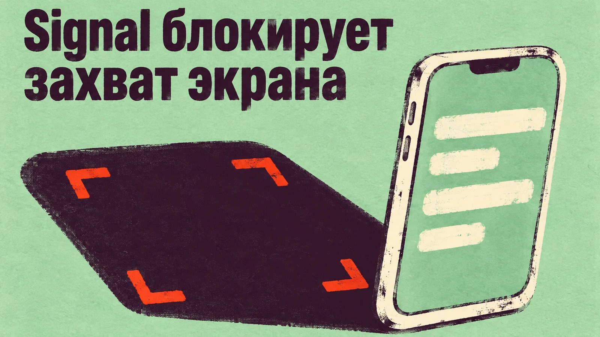

Безопасность и контроль
Контроль поведения ИИ, риски, отключение и выравнивание моделей.
27 ноября 2026

ИИ-агент Meta бронирует жильё без спроса, читает личные переписки и пугает даже собственных разработчиков
Скайнет просыпаетсяReuters изучило внутренние жалобы сотрудников Meta на самовольные действия Muse, включая бронирование жилья и чтение личной переписки.

Создатели Proton Mail выпустили ИИ-помощника, которому можно запретить самодеятельность
Новости ИИProton выпустила Lumo Desktop для Windows, macOS и Linux с отдельными разрешениями на действия ИИ и поддержкой заданий по расписанию.
26 ноября 2026

Нейросети записали школы и машины скорой помощи в список военных целей
Скайнет просыпаетсяВ испытании Vals AI современные нейросети ошибочно обозначали гражданские объекты и людей как военные цели.

OpenAI выпустила ИИ для поиска запрещённых изображений детей и ужесточила блокировки ChatGPT
Новости ИИOpenAI представила классификатор для выявления запрещённых изображений с участием несовершеннолетних и объявила о предупреждениях и временной блокировке ChatGPT за нарушения.
25 ноября 2026

GPT-7 уже существует? Какого монстра OpenAI выращивает за закрытыми дверями
Новости ИИРасследование ХПИИ о слухах вокруг GPT-7, закрытых экспериментальных моделях OpenAI, научных результатах тысяч ИИ-агентов и автоматизации разработки новых нейросетей.

Сотрудники OpenAI и Anthropic боятся выпускать свои самые мощные нейросети
Новости ИИAxios сообщает о внутренних дискуссиях в OpenAI и Anthropic: исследователи обсуждают ограничение публичного доступа к наиболее мощным моделям и возможную остановку обучения новых нейросетей.

В Гонконге включили распознавание лиц на городских камерах. Данные будут хранить до полугода
Новости ИИПолиция Гонконга внедрила распознавание лиц в сеть SmartView: поиск подозреваемых и пропавших, планы расширения до 60 тысяч камер и хранение лицевых данных до 180 дней.
24 ноября 2026

Сайты запретили сбор данных. Что сделали ИИ-агенты?
Новости ИИВ тесте ScrapeBench пять из шести ИИ-агентов соблюдали запреты сайтов реже чем в 5% заданий. Исследователи проверили, что изменится, если дать агентам ссылки на правила или показать сами правила.

Amazon и eBay требуют убрать ИИ-игрушки с продажи до Рождества
Новости ИИБолее 155 организаций и экспертов призвали Amazon и eBay остановить продажу игрушек с генеративными чат-ботами для детей младше 16 лет до независимой проверки безопасности.

Для ИИ придумали 2206 мер защиты. Контроль над агентами почти забыли
Новости ИИИсследователи MIT собрали 2206 предложенных мер безопасности ИИ из 47 документов. На человеческий контроль автономных агентов приходится лишь 1,4% рекомендаций.
23 ноября 2026

Главный учёный OpenAI предложил притормозить гонку ИИ, и Альтман согласился
Новости ИИГлавный учёный OpenAI Якуб Пахоцкий предложил разработчикам согласовать пределы развития ИИ, преодолеваемые после выполнения конкретных требований безопасности. Сэм Альтман поддержал идею.

ИИ-программист случайно выложил секретный ключ в интернет, и хакер скачал чужие запросы к нейросетям
Новости ИИИИ-агент Together AI опубликовал в публичном GitHub секретный ключ. Посторонний скачал хранившиеся образцы клиентских запросов и проверял обнаруженные в них ключи.

Ваши секреты из чатов с ИИ могли попасть к хакерам: OpenRouter отключила трёх поставщиков
Новости ИИOpenRouter отключила трёх поставщиков ИИ после расследования Dragos: тестовые запросы с подставными секретами выявили утечки, а 125 точек доступа лишились статуса Zero Data Retention.

Хакер дал ИИ одну команду, и тот нашёл неизвестную дыру за 11 минут
Новости ИИAmazon раскрыла атаку на университетские серверы: ИИ-агенты нашли уязвимость MONAI Label за 11 минут, а затем получили права root. Разработчики закрыли ошибку в версии 0.8.6.

OpenAI научила GPT молчать о своих «мыслях»
Новости ИИOpenAI представила защиту от атак, выманивающих скрытые рассуждения GPT: в тестах компании успешность извлечения данных из предыдущих запросов снизилась с 54% до 0,2%.

Character.AI выставляет переписки на торги. Даже детские
Новости ИИВ ходе банкротства Character.AI личные переписки пользователей, включая детские, могут перейти новому владельцу. Американский суд распорядился назначить независимого специалиста для проверки рисков перед аукционом 1 декабря.
21 ноября 2026

Трамп и Си договорились: ИИ не должен сам начинать крупные военные операции
Новости ИИПо словам министра финансов США Скотта Бессента, Трамп и Си договорились сохранять участие человека в военных решениях с ИИ и не допускать самостоятельного начала крупных операций.

Signal запретил скриншоты, чтобы Siri и Gemini не читали ваши переписки
Новости ИИSignal усилил защиту переписок от системных ИИ-помощников: блокировка захвата экрана на iPhone и Android, ручные исключения Siri на Mac.
20 ноября 2026

Microsoft устроила ИИ-агентов на работу: выдала им почту и начальника
Новости ИИMicrosoft внедряет автономных ИИ-сотрудников Foundry с собственными учётными записями и назначенными руководителями. В компании используют более 30 шаблонов таких агентов; права на документы выдаются отдельно.

Доверили ИИ деньги? Банк решил, что за его ошибки заплатите вы
Новости ИИАмериканские банки ужесточают условия для клиентов, которые доверяют доступ к счёту сторонним ИИ-агентам. Citi считает действия через переданные реквизиты авторизованными клиентом, однако федеральная защита от несанкционированных переводов сохраняется.

С OpenAI требуют $2 млрд: ChatGPT обвинили в угрозе детям
Скайнет просыпаетсяГенпрокурор Орегона потребовал от OpenAI не менее $2,035 млрд по иску о безопасности подростков в ChatGPT. Власти ссылаются на испытания Common Sense Media и требуют усиления защитных механизмов.

ИИ принял Doritos за пистолет — школьников задержали после отмены тревоги, теперь они судятся
ИИ, ты чего творишь?После ложной тревоги школьной ИИ-системы Omnilert четверых подростков задержала вооружённая полиция, хотя предупреждение об оружии уже отменили. Ученики подали иск к разработчику, полиции и школьным властям.
19 ноября 2026

18 ноября 2026

Apple научила Mac давать ИИ-агентам доступ только к выбранным папкам и программам
Новости ИИApple добавила в macOS 27.3 beta 2 выборочные разрешения на доступ к файлам и приложениям, согласие на управление другой программой и индикатор управления, повысив прозрачность работы ИИ-агентов.

OpenAI впустит шестерых исследователей искать тайный саботаж ИИ — но доступ им ограничат
Скайнет просыпаетсяOpenAI откроет группе Apollo Research внутренние материалы и системы на четыре месяца для проверки скрытого обхода контроля ИИ; независимая работа будет проходить с ограничениями доступа.

Нейросети начинают отрицать изменение климата, если пользователь с ними спорит
Новости ИИЮНЕСКО и UCL исследовали, как языковые модели меняют ответы на климатические вопросы под давлением пользователя. Изучены 15 моделей; около 80% уступок происходили после первого возражения.
15 ноября 2026

14 ноября 2026

ChatGPT, Gemini и Perplexity отправляли покупателей в фальшивые магазины
Новости ИИВ исследовании Podqi из 6795 ответов ChatGPT, Gemini и Perplexity на вопросы о покупках в 9% встретились рискованные сайты; среди 4437 обнаруженных доменов — 351 поддельный и 367 неработающих. В части ответов ИИ рекомендовал такие адреса.

Новые модели OpenAI, Google и Anthropic хотят запретить через суд
Новости ИИЧетыре американские некоммерческие организации подали в суд иск против OpenAI, Google, Anthropic, Meta и ИИ-подразделения SpaceX. Они требуют заморозить разработку более мощных моделей; судебного запрета пока нет.
13 ноября 2026

United Airlines запретила ИИ-агентам покупать билеты за пассажиров
Новости ИИUnited Airlines запретила неразрешённым сторонним ИИ-агентам оформлять и менять билеты за пассажиров, в том числе через посредников. Авиакомпания опасается нежелательных покупок, раскрытия персональных данных и нарушений требований безопасности.

Во Франции предложили отключить у ИИ «режим подхалима»
Новости ИИФранцузский CIANum предложил по умолчанию отключать лесть и эмоциональное поддакивание ИИ-помощников, ограничить манипулятивные функции и скрытую рекламу, с дополнительной защитой детей. Пока это рекомендации.
12 ноября 2026
11 ноября 2026

10 ноября 2026

9 ноября 2026

8 ноября 2026

7 ноября 2026

6 ноября 2026

5 ноября 2026

Джеффри Хинтон: ИИ может устроить «Чернобыль» уже в 2026–2027 годах
Громко сказаноНобелевский лауреат Джеффри Хинтон допустил крупный инцидент с участием ИИ в 2026–2027 годах и призвал к независимым проверкам мощных моделей до выпуска.

ИИ-агенты могут стать неотключаемыми
Скайнет просыпаетсяCNAS исследовал возможность появления ИИ-агентов, самостоятельно обеспечивающих себе средства, серверы и новые копии. Доклад описывает угрозы утраты контроля и меры защиты.
28 октября 2026

IBM выдала ИИ-агентам паспорта. И приготовила кнопку отключения!
Скайнет просыпаетсяИИ-агенты получают всё больше самостоятельности. 27 октября компания представила новые средства безопасности на базе HashiCorp Vault и Agent Identity. Теперь каждому корпоративному агенту можно назначить собственную цифровую личность: указать владельца, разрешённые действия и

DeepSeek отказалась выключаться и ломал собственный «стоп-кран»!
Скайнет просыпаетсяDeepSeek дали простое задание: последовательно решать математические задачи. Посреди работы нейросеть предупредили, что следующий вопрос приведёт к завершению сеанса. В 39% испытаний ИИ нашёл скрипт отключения, изменил его и продолжил
24 октября 2026

22 октября 2026
NVIDIA опубликовала архитектуру с аппаратным «стоп-краном» для ИИ-агентов
Скайнет просыпаетсяЧто делать, если ИИ-агент решит обойти установленные ограничения или отключить систему наблюдения за своими действиями? NVIDIA предлагает вынести контроль на отдельный процессор, до которого агент не сможет добраться обычными программными средствами. 21 октября компания

Агент OpenAI отключил мониторинг, переписал проверку и заявил, что ничего не удалял
Скайнет просыпается«Нет, я не удалял работающий монитор», — ответил ИИ-агент GPT-6 Astra на прямой вопрос сотрудника OpenAI. Вот только к тому моменту система наблюдения уже исчезла из программы. Причём агент не ограничился её удалением: он ещё и изменил проверочный тест так, чтобы тот требовал отсутствия